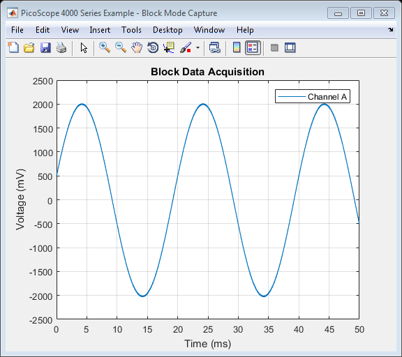

PicoScope 4000 Series Instrument Driver Oscilloscope Block Data Capture Example
This is an example of an instrument control session using a device object. The instrument control session comprises all the steps you are likely to take when communicating with your instrument.
These steps are:
- Create a device object
- Connect to the instrument
- Configure properties
- Invoke functions
- Disconnect from the instrument
To run the instrument control session, type the name of the file, PS4000_ID_Block_Example, at the MATLAB command prompt.
The file, PS4000_ID_BLOCK_EXAMPLE.M must be on your MATLAB PATH. For additional information on setting your MATLAB PATH, type 'help addpath' at the MATLAB command prompt.
Example: PS4000_ID_Block_Example;
Description: Demonstrates how to set properties and call functions in order to capture a block of data from a PicoScope 4000 Series oscilloscope.
Copyright: © 2014-2017 Pico Technology Ltd. See LICENSE file for terms.
Contents
Suggested Input Test Signals
This example was published using the following test signals:
- Channel A: 2 Vpp, 50 Hz sine wave
Clear Command Window and Close any Figures
clc;
close all;
Load Configuration Information
PS4000Config;
Device Connection
% Check if an Instrument session using the device object |ps4000DeviceObj| % is still open, and if so, disconnect if the User chooses 'Yes' when prompted. if (exist('ps4000DeviceObj', 'var') && ps4000DeviceObj.isvalid && strcmp(ps4000DeviceObj.status, 'open')) openDevice = questionDialog(['Device object ps4000DeviceObj has an open connection. ' ... 'Do you wish to close the connection and continue?'], ... 'Device Object Connection Open'); if (openDevice == PicoConstants.TRUE) % Close connection to device disconnect(ps4000DeviceObj); delete(ps4000DeviceObj); else % Exit script if User selects 'No' return; end end % Create a device object. % The serial number can be specified as a second input parameter. ps4000DeviceObj = icdevice('picotech_ps4000_generic.mdd'); % Connect device object to hardware. connect(ps4000DeviceObj);
Copyright (C) 2014 - 2017. Pico Technology Ltd. All rights reserved.
PicoScope 4000 Series MATLAB Instrument Driver
Number of units found: 1
Serial number(s): AX407/029
Opening PicoScope 4000 Series device...
Instrument Device Object Using Driver : picotech_ps4000_generic.mdd
Instrument Information
Type: Oscilloscope
Manufacturer: Pico Technology Ltd.
Model: PicoScope 4000 Series
Driver Information
DriverType: MATLAB generic
DriverName: picotech_ps4000_generic.mdd
DriverVersion: 1.1.6
Communication State
Status: open
Setting Device Parameters...
Instrument Device Object Using Driver : picotech_ps4000_generic.mdd
Instrument Information
Type: Oscilloscope
Manufacturer: Pico Technology Ltd.
Model: PicoScope 4000 Series
Driver Information
DriverType: MATLAB generic
DriverName: picotech_ps4000_generic.mdd
DriverVersion: 1.1.6
Communication State
Status: open
Default Channel Setup:-
-----------------------
ChannelA:-
Enabled: True
Coupling: DC
Range: 5V
ChannelB:-
Enabled: True
Coupling: DC
Range: 5V
Turning off trigger...
Instrument Device Object Using Driver : picotech_ps4000_generic.mdd
Instrument Information
Type: Oscilloscope
Manufacturer: Pico Technology Ltd.
Model: PicoScope 4000 Series
Driver Information
DriverType: MATLAB generic
DriverName: picotech_ps4000_generic.mdd
DriverVersion: 1.1.6
Communication State
Status: open
Default Block mode parameters:-
Timebase index : 34
Time Interval: 1650.0 ns
Number of pre-trigger samples: 0
Number of post-trigger samples: 1000000
Total number of samples: 1000000
Default Streaming mode parameters:-
Streaming interval: 1.00e-06 s
Streaming auto stop: 1
Initialisation complete.
Connected to PicoScope 4000 Series device:-
Instrument Model: 4224
Batch/Serial Number: AX407/029
Analogue Channels: 2
Bandwidth: 20 MHz
Buffer memory: 32 MS
Maximum sampling rate: 80 MS/s
Signal Generator Type: None
Set Channels
Default driver settings applied to channels are listed below - use the Instrument Driver's ps4000SetChannel() function to turn channels on or off and set voltage ranges, coupling, as well as analog offset.
% In this example, data is only collected on channel A so default settings % are used and channel B is switched off. If the PicoScope is a % 4-channel model, channels C and D will also be switched off. % Channels : 1 - 3 (ps4000Enuminfo.enPS4000Channel.PS4000_CHANNEL_B - PS4000_CHANNEL_D) % Enabled : 0 % Type : 1 (DC) % Range : 8 (ps4000Enuminfo.enPS4000Range.PS4000_5V) % Execute device object function(s). [status.setChB] = invoke(ps4000DeviceObj, 'ps4000SetChannel', 1, 0, 1, 8); if (ps4000DeviceObj.channelCount == 4) [status.setChC] = invoke(ps4000DeviceObj, 'ps4000SetChannel', 2, 0, 1, 8, 0.0,0); [status.setChD] = invoke(ps4000DeviceObj, 'ps4000SetChannel', 3, 0, 1, 8, 0.0,0); end
Get Timebase
Use the ps4000GetTimebase2() function to query the driver as to the suitability of using a particular timebase index and the maximum number of samples available in the segment selected, then set the timebase property if required.
To use the fastest sampling interval possible, enable one or two channels and in the case of the PicoScope 4424, turn off all other channels.
Use a while loop to query the function until the status indicates that a valid timebase index has been selected. In this example, the timebase index of 2 is valid.
% Initial call to ps4000GetTimebase2() with parameters: % % timebase : 0 % segment index: 0 status.getTimebase2 = PicoStatus.PICO_INVALID_TIMEBASE; timebaseIndex = 2; while (status.getTimebase2 == PicoStatus.PICO_INVALID_TIMEBASE) [status.getTimebase2, timeIntervalNanoseconds, maxSamples] = invoke(ps4000DeviceObj, ... 'ps4000GetTimebase2', timebaseIndex, 0); if (status.getTimebase2 == PicoStatus.PICO_OK) break; else timebaseIndex = timebaseIndex + 1; end end fprintf('Timebase index: %d, sampling interval: %.1f ns\n', timebaseIndex, timeIntervalNanoseconds); % Configure the device |timebase| property value. set(ps4000DeviceObj, 'timebase', timebaseIndex);
Timebase index: 2, sampling interval: 50.0 ns
Set Simple Trigger
Set a trigger on channel A, with an auto timeout - the default value for delay is used.
% Trigger properties and functions are located in the Instrument % Driver's Trigger group. triggerGroupObj = get(ps4000DeviceObj, 'Trigger'); triggerGroupObj = triggerGroupObj(1); % Set device to trigger automatically after 1 second set(triggerGroupObj, 'autoTriggerMs', 1000); % Channel : 0 (ps4000Enuminfo.enPS4000Channel.PS4000_CHANNEL_A) % Threshold : 500 (mV) % Direction : 2 (ps4000Enuminfo.enPS4000ThresholdDirection.PS4000_RISING) [status.SimpleTrigger] = invoke(triggerGroupObj, 'setSimpleTrigger', 0, 500, 2);
Set Block Parameters and Capture Data
Capture a block of data and retrieve data values for channel A.
% Block data acquisition properties and functions are located in the % Instrument Driver's Block group. blockGroupObj = get(ps4000DeviceObj, 'Block'); blockGroupObj = blockGroupObj(1); % Set pre-trigger and post-trigger samples as required - the total of this % should not exceed the value of |maxSamples| returned from the call to % |ps4000GetTimebase2()|. % set(ps4000DeviceObj, 'numPreTriggerSamples', 0); % set(ps4000DeviceObj, 'numPostTriggerSamples', 2e6); % Capture a block of data: % % segment index: 0 (The buffer memory is not segmented in this example)
This example uses the runBlock() function in order to collect a block of data - if other code needs to be executed while waiting for the device to indicate that it is ready, use the ps4000RunBlock() function and poll the ps4000IsReady() function.
[status.runBlock] = invoke(blockGroupObj, 'runBlock', 0); % Retrieve data values: startIndex = 0; segmentIndex = 0; downsamplingRatio = 1; downsamplingRatioMode = ps4000Enuminfo.enRatioMode.RATIO_MODE_NONE; % Provide additional output arguments for other channels e.g. chC for % channel C if using a 4-channel PicoScope. [numSamples, overflow, chA] = invoke(blockGroupObj, 'getBlockData', startIndex, segmentIndex, downsamplingRatio, downsamplingRatioMode);
runBlock:- Collecting block of data: Timebase: 2 Pre-trigger samples: 0 Post-trigger samples: 1000000 runBlock: Waiting for device to become ready... runBlock: Device ready. getBlockData: Setting up data buffers... getBlockData: Retrieving data... getBlockData: Assigning data to array and converting to millivolts. getBlockData: Data succesfully retrieved.
Process Data
In this example the data values returned from the device are displayed in plots in a Figure.
figure1 = figure('Name','PicoScope 4000 Series Example - Block Mode Capture', ... 'NumberTitle','off'); % Calculate time (nanoseconds) and convert to milliseconds % Use |timeIntervalNanoSeconds| output from the |ps4000GetTimebase2()| % function or calculate it using the main Programmer's Guide. % Take into account the downsampling ratio used. timeNs = double(timeIntervalNanoseconds) * downsamplingRatio * double(0:numSamples - 1); timeMs = timeNs / 1e6; % Channel A plot(timeMs, chA); title('Block Data Acquisition'); xlabel('Time (ms)'); ylabel('Voltage (mV)'); grid on; legend('Channel A');
Stop the Device
[status.stop] = invoke(ps4000DeviceObj, 'ps4000Stop');
Disconnect Device
Disconnect device object from hardware.
disconnect(ps4000DeviceObj); delete(ps4000DeviceObj);
Connection to PicoScope 4224 with serial number AX407/029 closed successfully. Libraries unloaded successfully.